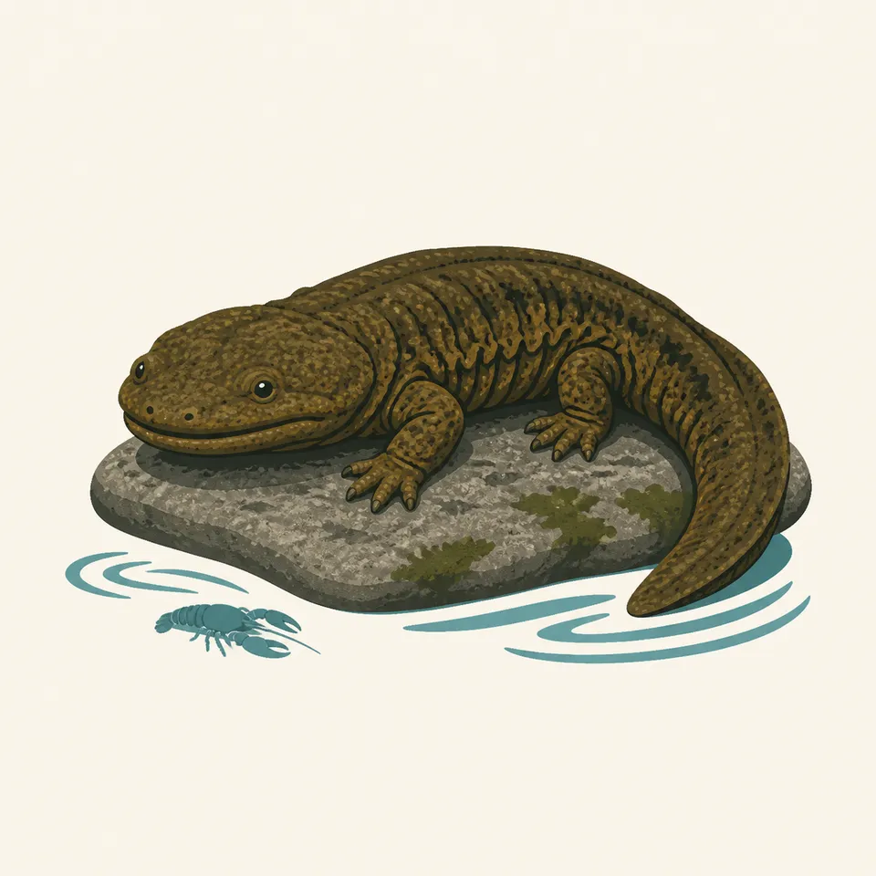
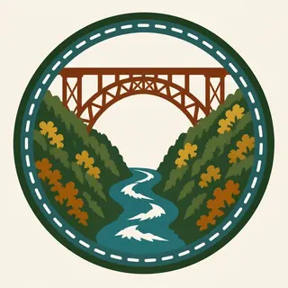

01
The New River Gorge Bridge
Completed October 22, 1977, after three years of construction: 3,030 feet long, 876 feet above the river, the longest steel span in the Western Hemisphere.
TrailMark Archive Edition
West Virginia | Appalachian Plateau
A national river since November 10, 1978. Congress redesignated it a national park and preserve in an act enacted December 2020; NPS announced the new status January 20, 2021.
Archive No. TM-NERI-053
National Park since 2020
Collection Appalachian Plateau
Park Overview
New River Gorge became a unit of the National Park System as a national river on November 10, 1978. Congress redesignated it New River Gorge National Park and Preserve in the Consolidated Appropriations Act for Fiscal 2021, enacted in December 2020, with NPS announcing the new status January 20, 2021.
The park protects more than 70,000 acres of land along the river, about 90 percent of it in the national preserve, which permits hunting as a traditional regional use; the remaining acreage is national park, where it is not.
The New River itself is, by the park's own geology page, a very old river that existed before the Appalachian Mountains rose around it and cut into them as fast as they were uplifted, holding its ancient course.
Emotional Thesis
The header painting sets the New River Gorge Bridge over autumn forest and sandstone cliffs, the river a blue thread far below. The bridge is real and specific: 3,030 feet long, 876 feet above the river, the longest steel span in the Western Hemisphere and the third highest bridge in the United States.
Before the bridge, the drive around the gorge took the better part of an hour; the crossing now takes under a minute. The gorge itself long predates that convenience, cut by a river the park's own pages call very old, in place before the mountains around it existed.
Landscape Highlights
01
Completed October 22, 1977, after three years of construction: 3,030 feet long, 876 feet above the river, the longest steel span in the Western Hemisphere.
02
Hard sandstone cliffs, 30 to 120 feet tall, line the gorge and carry over 1,400 established rock climbs, most graded 5.9 or harder.
03
A very old river, by the park's own account, that predated the Appalachian Mountains and cut into them as they rose, maintaining a course the mountains never redirected.
Wildlife
The eastern hellbender, a fully aquatic giant salamander that can grow to over two feet, is believed to occur within the park and is a species of special concern in West Virginia. The extra drawing, a hellbender beside a crayfish, is the archive's image of the river's clean-water residents.

01
Hellbenders breathe entirely through their skin and require cool, clear, rocky-bottomed streams; their presence signals healthy water quality.
02
Known by names like "Allegheny alligator" and "snot otter," hellbenders are increasingly rare, and sightings within the park are notable when confirmed.
03
Hellbenders cannot legally be collected in West Virginia; any encounter in the park should be observed, not handled.
Geology
The New River's geologic distinction is timing: it predated the Appalachian Mountains and cut down through them as fast as they were uplifted, rather than being carved by them.
01
The gorge exposes 3,200 feet of old rock, shaped by a long period of erosion into the V-shaped canyon the bridge now spans.
02
The New River was once the headwaters of the ancient Teays River, which drained toward an inland sea covering the middle of the continent.
03
No page opened for this essay states a specific age in years for the river; claims of a precise figure circulate outside NPS sources and are not repeated here.
High water from snowmelt and rain makes for the most active whitewater rafting season on the New River.
Warmer, lower water suits family-friendly rafting and swimming; climbing season continues on the sandstone cliffs.
Cooler temperatures bring prime rock climbing conditions and the gorge's best foliage, culminating in Bridge Day in October.
Quieter months in the gorge; the bridge and overlooks remain accessible while river and trail use drops off.
Photography
A steel arch photographed close makes an abstract pattern. Set against the full depth of the gorge and the river far below, the same bridge reads at its actual scale.
01
Overlooks along the gorge rim place the bridge against the full 876-foot drop to the river, the detail that sets its scale.
02
Fall foliage against the bridge's steel is the park's signature seasonal image, as the header painting reflects.
03
A tight crop on the arch alone could be mistaken for any large steel bridge; keep the gorge and river visible to place it here.
Field Notes
A river older than the mountains cut this gorge, and a bridge finished in 1977 crosses it in under a minute.
TrailMark Field Notes

Badge Story
The badge fails if the bridge could be anywhere. The specific arch shape against sandstone cliffs and autumn forest is what claims this gorge.
Cool blue sky against warm rust-colored steel.
Visible gorge depth below the arch, not just the span itself.
Autumn forest color, the season the bridge is most photographed in.
Archive No.053
LocationAppalachian Plateau
ReleaseSteel Arch Mark
Stewardship / Safety
About 90 percent of the park is preserve, where hunting is a permitted traditional use; the remainder is park, where it is not. The river itself carries serious whitewater.
Know whether you are in park or preserve land; hunting regulations differ between them.
Whitewater sections of the New River are rated for experienced rafters; commercial outfitters and NPS guidance should inform any unguided trip.
Climbing on the sandstone cliffs requires standard protection practices; most established routes are rated for advanced or expert climbers.
Report hellbender sightings rather than attempting to catch or move one; they are a species of special concern and are protected.
Current conditions, fees, and alerts are on the National Park Service site.
Continue the Archive
Gateway Arch's stainless steel curve marks a city; this bridge's steel arch crosses a wild gorge. Mammoth Cave, already open, is the nearest Appalachian-adjacent park in this archive. North Cascades, in this batch, is a very different Appalachian-versus-Cascade mountain story.